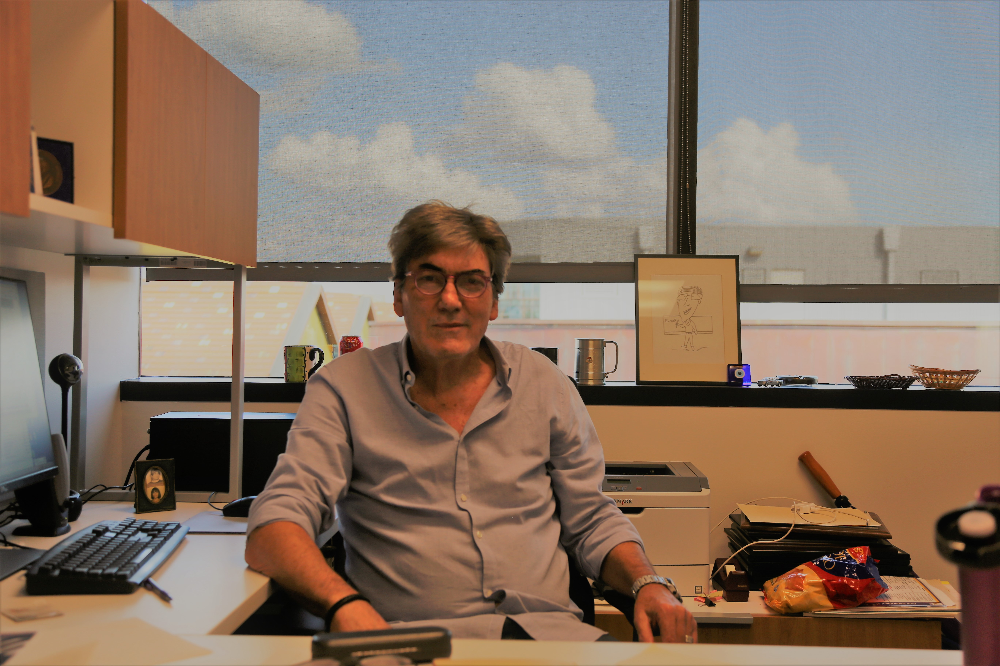

← Back to People
PSE Chair

José A. Romagnoli Ph.D.
Gordon A. and Mary Cain Endowed Chair Professor
M. Gautreaux/Ethyl Chair Professor
Educational Background
- PhD, University of Minnesota, 1980
- BS, Universidad Nacional del Sur, Argentina, 1974
Research Interest
- Advanced multi-scale modelling architectures for complex processes
- Advanced multiresolution image analysis and characterization techniques
- Design and synthesis with economic-environmental-operability considerations
- Intelligent data processing, reconciliation, and monitoring
- Advanced process control
- Enterprise-wide optimization
Awards
- Worley Professor of Excellence Award, Louisiana State University (2020).
- Awarded the 2016 PSE Model-Based Innovation Prize for the paper: “Combining on-line characterization tools with modern software environments for optimal operation of polymerization processes, PSE (2016).”
- Donald W. Clinton Mentor Award, C. of Engineering, Louisiana State University (2013).
- Awarded the 2008 PSE Model-Based Innovation Prize for the paper: “Model-based optimal strategies for controlling particle size in antisolvent crystallization operations”, PSE (2008).
- Donald W. Clinton Mentor Award, C. of Engineering, Louisiana State University (2008).
- Awarded the John Brodie medal for contributions to Chemical Engineering, Institute of Chemical Engineers, Australia (2005).
- Awarded the Centenary Medal of Australia by the Prime Minister for contributions to the field of Chemical Engineering (2003).
- Elected Fellow, Australian Academy of Technological Sciences and Engineering (FATSE) for contributions to the field of Process Systems Engineering (1999).
- Fellow of the Institution of Engineers, Australia (1996).
- Award for best innovation work within the Plastics Division at Orica Botany Site (1997).
- Worldwide ICI Award for Innovation, Creativity and Excellence in Engineering (1995).